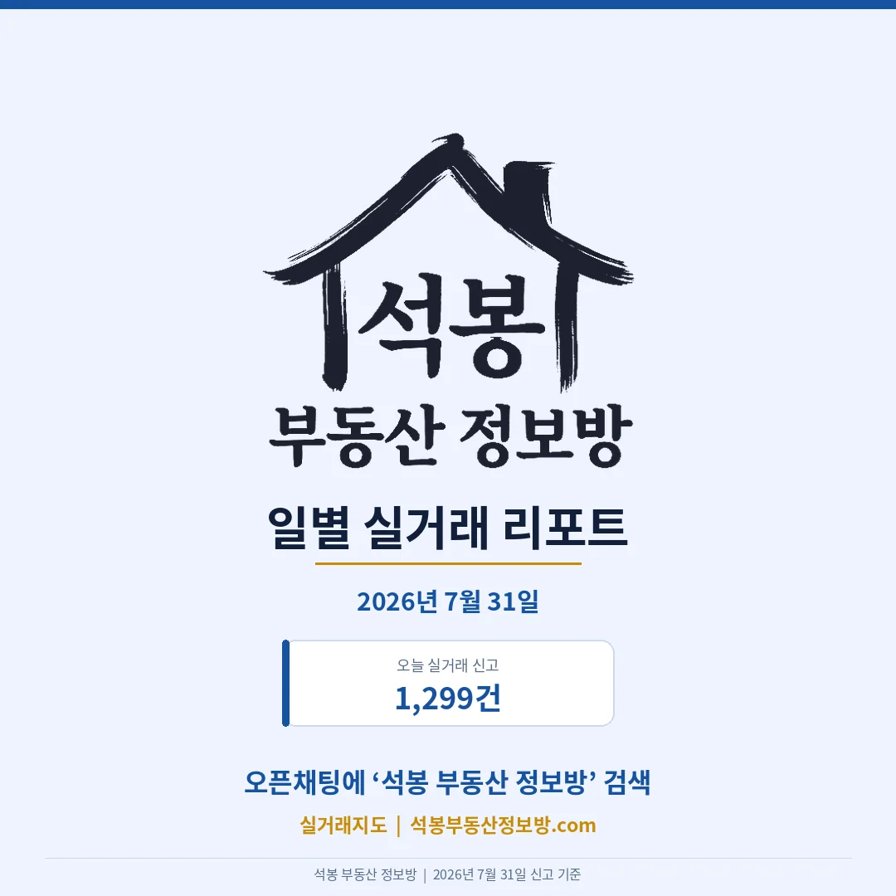
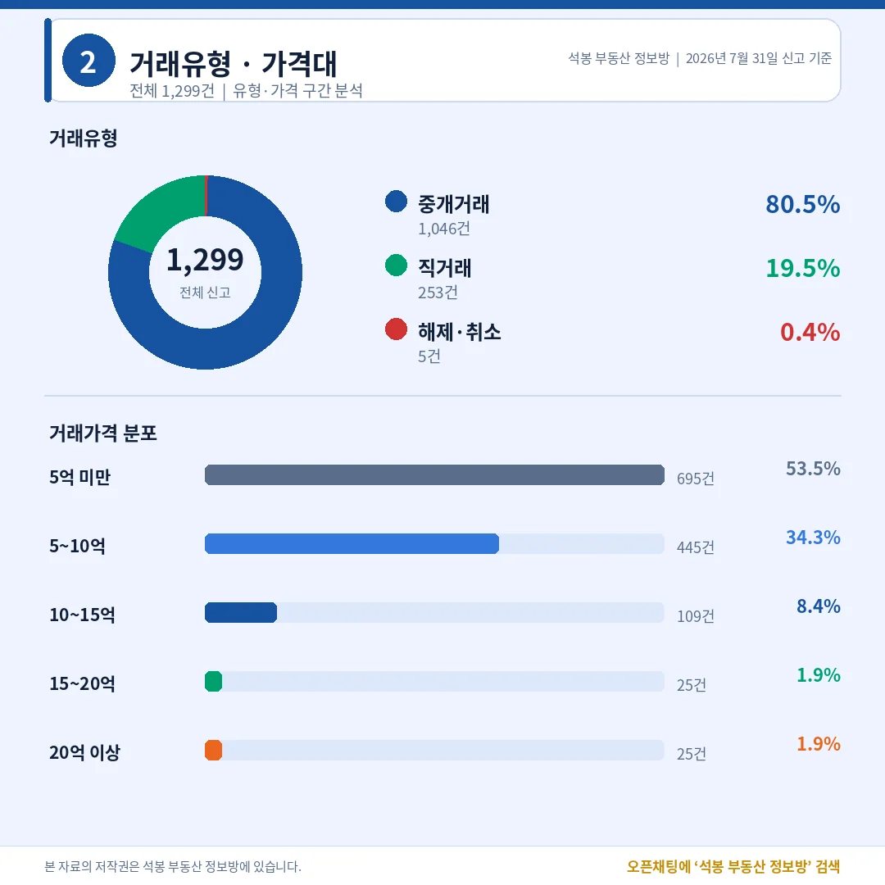
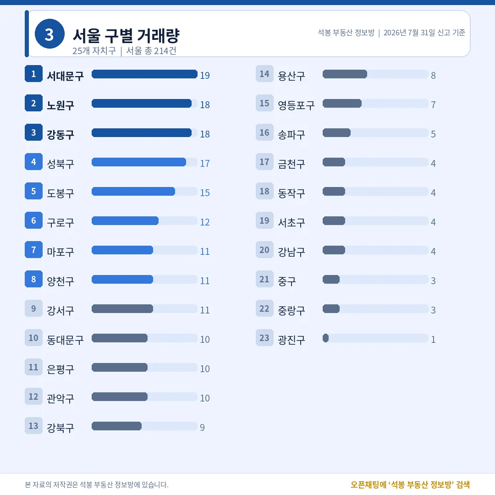
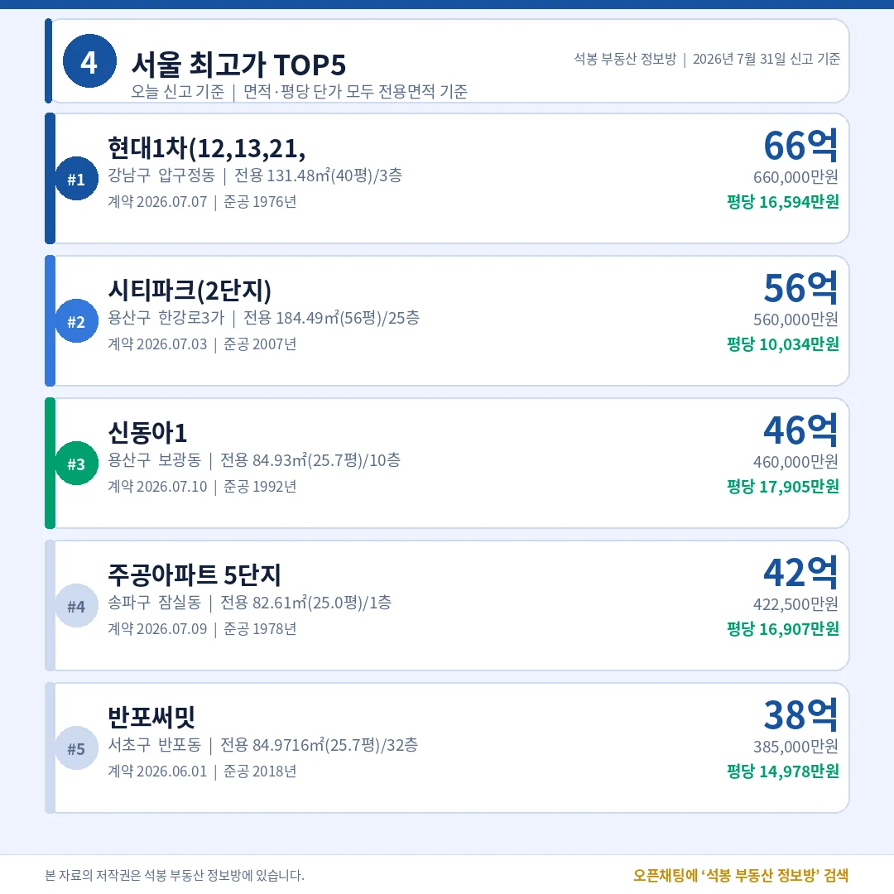
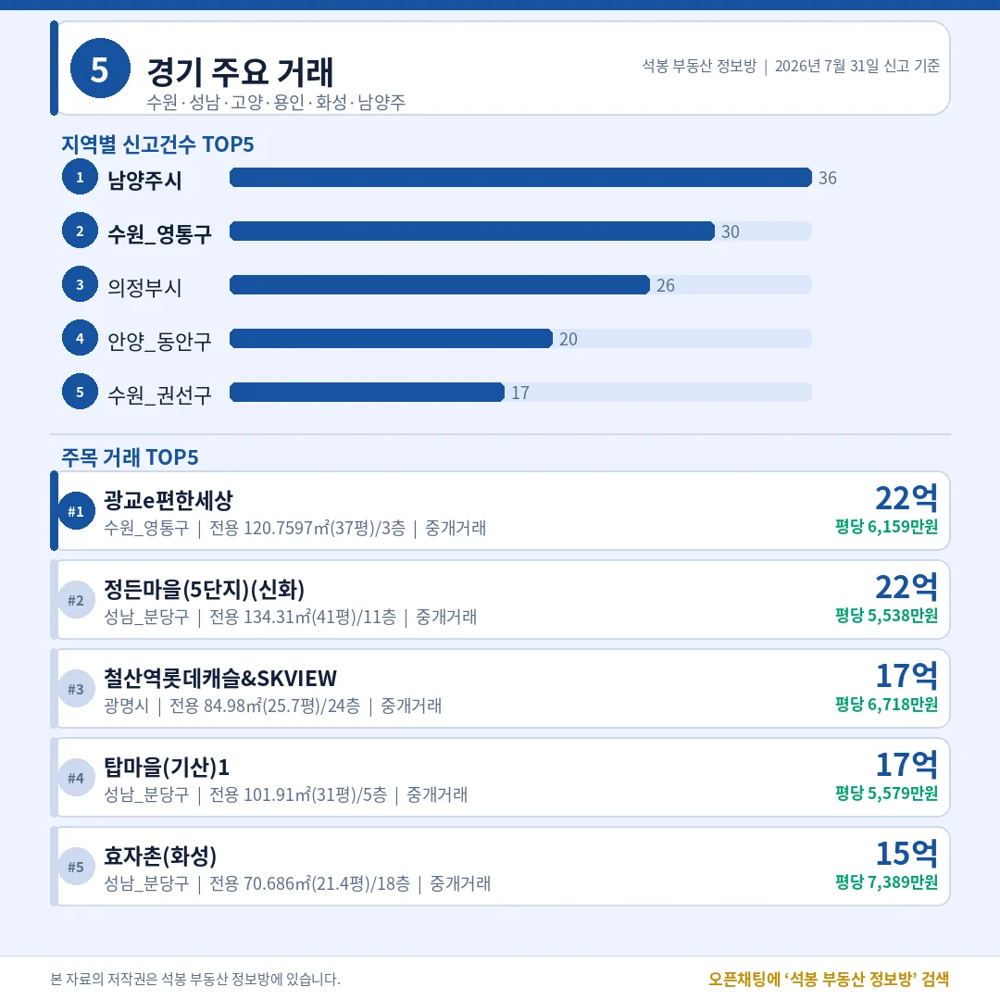
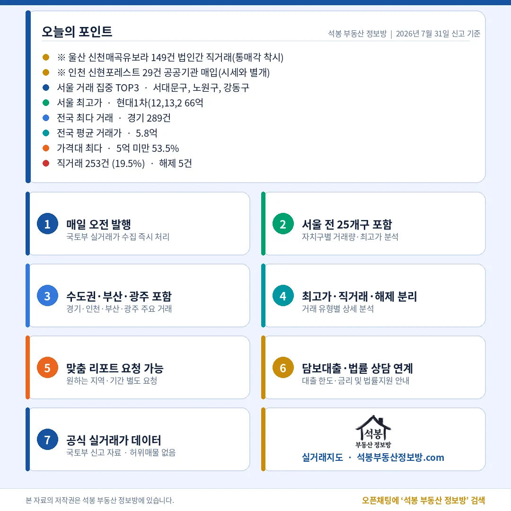

7월 31일 전국에서 아파트 1,299건이 실거래로 신고됐습니다. 오늘 가장 비싼 집은 압구정동 66억이었는데, 정작 1평당 가격이 가장 높았던 집은 34억짜리였습니다. 총액 순위와 평당 순위가 이렇게 어긋나는 날은 시장을 읽는 눈을 하나 더 갖게 해 줍니다. 여기에 울산과 인천에서 한꺼번에 쏟아진 178건이 오늘 통계를 흔들었습니다. 숫자를 하나씩 풀어 드립니다.
오늘 시장 한눈에: 직거래 19.5%, 그런데 대부분이 한 단지

전체 1,299건 가운데 중개거래가 1,046건(80.5%), 직거래(중개사 없이 당사자끼리 한 거래)가 253건(19.5%), 해제·취소는 5건(0.4%)이었습니다. 직거래 비중 19.5%는 평소의 세 배 수준이라 그냥 넘길 숫자가 아닙니다. 7월 29일 데일리에서 직거래 착시를 한 번 짚어 드렸는데, 오늘은 그 규모가 훨씬 큽니다.
단지별로 뜯어보니 울산 북구 신천매곡유보라 149건이 전부 법인이 법인에게 넘긴 직거래였고, 계약일도 7월 28일 하루에 몰려 있었습니다. 사실상 단지 하나를 통째로 넘긴 거래입니다. 여기에 인천 서해구 신현포레스트201동 29건은 공공기관이 개인에게서 사들인 매입 물량이었습니다. 이 178건을 빼면 남는 거래는 1,121건, 직거래는 75건으로 비율이 6.7%(75건÷1,121건)까지 내려앉습니다. 오늘 시장의 실제 체온은 19.5%가 아니라 6.7% 쪽입니다.
가격대는 5억 미만이 695건(53.5%)으로 절반을 넘겼고 5~10억이 445건(34.3%)으로 뒤를 이었습니다. 10~15억 109건(8.4%), 15~20억과 20억 이상이 나란히 25건(각 1.9%)이었습니다. 열 건 중 아홉 건 가까이가 10억 아래에서 거래된 하루였습니다.
어디서 거래됐나: 울산이 3위에 오른 이유

시도별로는 경기 289건, 서울 214건에 이어 울산이 186건으로 3위에 올랐습니다. 최근 나흘간 울산 신고는 26건에서 72건 사이였으니 갑절 이상 뛴 셈인데, 앞서 본 149건을 빼면 37건으로 제자리를 찾습니다. 인천 121건도 신현포레스트 29건을 덜어내면 92건입니다. 이 두 덩어리를 제외한 수도권 비중은 53.1%(595건÷1,121건)로, 최근 평균에서 크게 벗어나지 않습니다.
서울 214건은 서대문구 19건이 1위였고 노원구와 강동구가 각 18건, 성북구 17건, 도봉구 15건 순이었습니다. 반대로 강남·서초·송파를 다 합쳐도 13건에 그쳤습니다. 서대문 19건도 한 단지 몰아치기가 아니라 DMC파크뷰자이 2·3단지 6건에 나머지가 흩어진 형태였고, 노원 역시 상계주공과 월계 구축에 1~2건씩 붙었습니다. 건수는 중저가 벨트가 만들고 금액은 강남권이 만드는 서울의 이중 구조가 오늘도 그대로였습니다.
오늘의 최고가: 총액 1위와 평당 1위가 갈렸다

서울 최고가 1위는 압구정동 현대1차 66.0억(전용 131.48㎡, 39.8평, 1976년 준공)이었습니다. 2위는 한강로3가 시티파크 2단지 56.0억(전용 184.49㎡, 55.8평, 2007년 준공), 3위는 보광동 신동아1 46.0억(전용 84.93㎡, 25.7평, 1992년 준공)이었고, 송파구 잠실동 주공5단지가 42.2억(전용 82.61㎡, 25.0평), 서초구 반포써밋이 38.5억(전용 84.97㎡, 25.7평)으로 뒤를 이었습니다.
그런데 평당 단가로 줄을 다시 세우면 순서가 완전히 바뀝니다. 오늘 서울 평당 1위는 반포동 반포리체였습니다. 거래가는 34.2억으로 압구정 66억의 절반 남짓이지만, 전용 59.99㎡(18.1평) 소형이라 평당 18,845만원이 나왔습니다. 압구정 현대1차는 평당 16,594만원, 보광동 신동아1은 17,905만원, 잠실 주공5단지는 16,907만원이었으니 총액 3~4위가 평당에서는 앞서 나간 셈입니다.
왜 이런 역전이 생기냐면, 총액은 면적이 클수록 커지지만 평당가는 면적으로 나눈 값이라 입지와 상품성이 더 정직하게 드러나기 때문입니다. 넓은 구축 대형은 총액이 커도 평당가는 낮게 나오고, 요지의 소형은 총액이 작아도 평당가가 치솟습니다. 그래서 "얼마에 팔렸나"만 보면 시장을 절반만 보는 셈이고, "평당 얼마였나"를 같이 봐야 비교가 됩니다. 우리 카드와 지도에서 단가를 늘 평당(전용면적 기준)으로 적는 이유이기도 합니다.
용산의 하루: 8건 중 2건이 서울 2·3위
오늘 서울 TOP3에서 눈에 띈 건 용산입니다. 용산구 신고는 8건뿐이었는데 그중 두 건이 서울 2위와 3위를 차지했습니다. 한강로3가 시티파크 2단지 56억은 55.8평 대형이라 평당은 10,034만원으로 낮은 편이었지만, 보광동 신동아1은 25.7평 국민평형이 46억에 팔리며 평당 17,905만원을 찍었습니다. 같은 구 안에서도 평형과 위치에 따라 단가가 두 배 가까이 벌어졌습니다.
신동아1은 흐름도 눈여겨볼 만합니다. 같은 전용 84.93㎡가 6월 13일 43.5억, 7월 1일 45.0억을 거쳐 이번에 46.0억으로 신고됐습니다. 두 달이 채 안 되는 사이 계단을 세 칸 오른 모양새인데, 거래 표본이 다섯 건 남짓이라 단정하기는 이르고 방향만 확인하는 정도가 적당합니다.
수도권 밖은 어땠나: 광교 22.5억, 광주는 7억대가 상단

경기 289건은 남양주 36건, 수원 영통구 30건, 의정부 26건, 안양 동안구 20건 순이었습니다. 금액 상단은 광교e편한세상 22.5억(전용 120.76㎡, 36.5평, 평당 6,159만원)과 성남 분당구 정자동 정든마을 5단지 22.5억이 나란히 차지했습니다. 광명 철산역 롯데캐슬앤에스케이뷰클래스티지가 17.3억(전용 84.98㎡, 25.7평, 평당 6,718만원)으로 뒤를 이었는데, 신축 국민평형이 분당·광교 대형과 비슷한 평당가를 내는 구도가 이어졌습니다.
인천 121건은 서해구 38건, 연수구 30건, 부평구 20건 순이었고 최고가는 송도동 송도더샵파크애비뉴 13.4억(전용 84.51㎡, 25.6평, 평당 5,261만원)이었습니다. 참고로 인천은 7월 행정구역 개편으로 옛 서구가 검단구와 서해구로 나뉘어 통계에 잡힙니다. 부산 72건은 연제구 10건, 해운대구 9건 순이었고 상단은 우동 해운대센트럴푸르지오 10.4억(전용 85.0㎡, 25.7평, 평당 4,037만원)이었습니다. 광주 56건은 북구 14건, 서구 13건 순에 최고가가 쌍촌동 상무푸르지오 7.7억(전용 154.83㎡, 46.8평, 평당 1,633만원)으로, 46평 대형이 서울 18평 소형의 4분의 1도 안 되는 값에 거래됐습니다.
오늘의 인사이트

오늘 데이터가 남긴 교훈은 두 가지입니다. 첫째, 합계는 쉽게 부풀려집니다. 전국 1,299건 중 178건이 법인 간 통매각과 공공기관 매입이었고, 이 물량 하나로 울산이 전국 3위가 되고 직거래 비율이 19.5%로 올라갔습니다. 실제 시장이 만든 숫자는 1,121건에 직거래 6.7%였습니다. 헤드라인 숫자를 볼 때 어느 단지에서 몇 건이 한꺼번에 나왔는지를 확인하는 습관이 필요한 이유입니다.
둘째, 가격은 총액이 아니라 평당으로 봐야 비교가 됩니다. 압구정 66억과 반포동 34억을 나란히 두면 앞이 두 배 비싸 보이지만, 평당으로 환산하면 34억 쪽이 앞섭니다. 넓은 구축의 재건축 기대와 요지 소형의 실입주 수요가 서로 다른 방식으로 가격을 만들고 있어서, 같은 잣대로 세워야 비로소 시장이 보입니다. 오늘 평당 상위 네 건이 반포리체 18,845만원, 보광동 신동아1 17,905만원, 잠실 주공5단지 16,907만원, 압구정 현대1차 16,594만원으로 서초·용산·송파·강남에 흩어져 있으면서도 평당 1.66만에서 1.88만 사이에 모여 있었습니다. 서울 상단의 몸값이 특정 동네만의 이야기가 아니라 비슷한 눈높이에서 형성되고 있다는 뜻으로 읽힙니다.
원자료: 국토교통부 실거래가 공개시스템 (2026년 7월 31일 신고분 기준) · 면적과 평당 단가는 모두 전용면적 기준 · 편집·제작: 석봉 부동산 정보방 · 실거래 신고분은 계약일과 신고일이 다를 수 있으며, 해제·취소 건이 뒤늦게 반영될 수 있습니다 · 본 자료는 정보 제공 목적이며 투자 권유가 아닙니다.